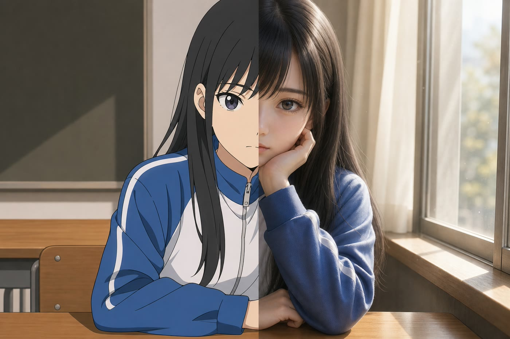
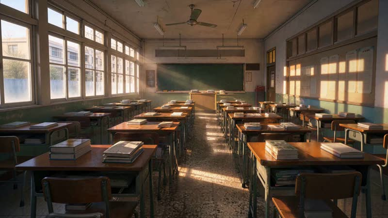

2D · CEL3D · ANIME
赛璐璐会横跳
同一条视频里，模型会在 2D 平涂和 3D 渲染之间反复切换。只有三维动画那一档是稳的。
→ 风格写死为动漫 3D，每条提示词最前面都带
拖动分界线
BY UPDREAM · 开源 · AI 短剧生产工作台
从墨到影：把一章小说，拍成一集短剧。
拆镜、资产、预演截帧、出片、字幕对齐、导出——一个人、一台机器、一条流水线。图和视频走 fal.ai 上的 gpt-image-2.5 与 MiniMax H3，也支持任何 OpenAI 兼容接口。
全部画面由墨影生成 · 《同桌说：你压到我头发了》第一集
从墨到影FROM INK TO REEL
01 · 问题
用图片模型画首帧、再喂给视频模型出片，是最常见的流水线。做了几百个镜头之后，两个问题绕不过去。

同一条视频里，模型会在 2D 平涂和 3D 渲染之间反复切换。只有三维动画那一档是稳的。
→ 风格写死为动漫 3D，每条提示词最前面都带
拖动分界线
同一套提示词，图片模型画出来的人和视频模型渲染出来的人就是两个人。每镜首帧各画一次，进了视频模型再各漂一次，一集下来人物不像同一个。
→ 首帧从视频模型自己的预演里截
02 · 流程
Agent 把原文拆成分镜组和镜头：景别、运镜、台词、时长、两套提示词。
人设三视图、场景图、道具图、画风参考。人物按 tag 分版本。
全能参考把整章镜头闪一遍，每镜不到一秒。首帧从这里人工截。
首帧、首尾帧、分段拼接。关键帧钉死起止，模型只补运动。
Whisper 字级时间戳把台词对到真正开口的那一秒。
ffmpeg 拼接、裁切、烧字幕、BGM 连续段落、片尾字卡。
03 · 预演
一条 15 秒的视频装下 20 个镜头。拖动进度条，找到最清楚的一帧，采用——它天然就是视频模型自己的世界观，之后出片零漂移。

04 · 出片
只有首帧时，结束画面全看模型发挥。加一张尾帧，起止都钉死；加中间关键帧，就按帧切成几段，每段一次首尾帧生成，出完拼接——接缝是同一张图，画面连续。
05 · 版本
每一次生成都是一个版本，能回看、能切回、能弃。每个产物记着生成那一刻全部输入的指纹——改了上游不用传播，重算一遍就知道谁过期了。点一个上游节点试试。
06 · 界面
左栏分镜组与镜头缩略图，中栏镜头编辑器，右栏参考 · 首帧 · 视频三个阶段。首帧页顶上是预演截帧的进度条。
07 · 技术
单进程自带任务队列，一台机器就能跑。切供应商只改一个环境变量；每一次生成的成本都记在版本上。